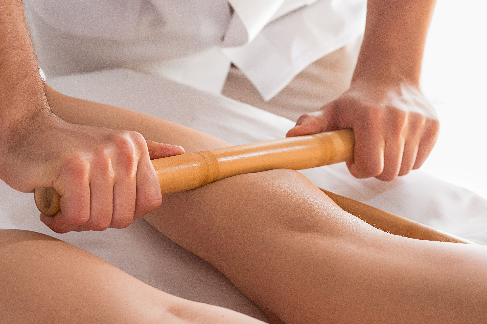

bambuterapia o que é
A bambuterapia é uma técnica de massagem em que são utilizadas hastes de bambu (de diferentes tamanhos e espessuras) que se “encaixam” de acordo com a região do corpo em que são aplicadas, podendo gerar benefícios estéticos (como diminuição da celulite, por exemplo) e/ou terapêuticos (como relaxamento, entre outros). Conheça as particularidades da técnica, suas vantagens e contraindicações.
Como o tratamento é realizado?
Os bambus possuem diferentes tamanhos e espessuras, com a finalidade de adaptar-se a cada região
do corpo, desde a face até os pés. Podem ser aplicados na face (para drenagem linfática e massofilaxia
facial) e em todo o corpo (modeladora, relaxante, terapêutica, shiatsu, drenagem linfática)”
Mas deve-se sempre tomar cuidado para que não gere nenhum desconforto ou hematomas na pele do cliente. Os bambus precisam ter superfície regular, ser lixados e envernizados, para o perfeito deslizamento; e devem ser sempre higienizados para cada cliente”, acrescenta a técnica em massoterapia.
“Se os movimentos são suaves, leves, lentos, no sentido linfático, funcionam como uma drenagem linfática, melhorando o fluxo linfático, ajudando a diminuir os edemas. Com pressões mais intensas, movimentos lentos, o tratamento proporciona relaxamento profundo dos músculos, sendo uma massagem relaxante ou até mesmo terapêutica, trabalhando nos pontos de tensão. Quando os movimentos são mais rápidos, intensos, possui o efeito da massagem modeladora, com a finalidade de modelar a gordura localizada”
Outra versatilidade do bambu é que ele pode ser feito sobre a roupa, ou direto na pele, dependendo da técnica aplicada. “Por exemplo, numa técnica para relaxamento é possível fazer sobre a roupa; já em uma modeladora, é necessário fazer direto na pele, com cremes específicos
A bambuterapia pode ser feita em uma sessão inteira, em que se utilizam apenas os bambus, ou também ser usada para auxiliar diversos tratamentos, tanto corporais quanto faciais, como na drenagem linfática, modeladora, relaxante e nos tratamentos terapêuticos.
O tempo de sessão também varia. “Quickmassage associada com bambuterapia, por exemplo, dura 15 minutos; a massagem facial dura de 15 a 30 minutos; já a drenagem linfática, a massagem relaxante ou terapêutica, dura de 45 a 90 minutos. As sessões, em geral, podem ser feitas até três vezes na semana (em dias intercalados)
Vantagens da bambuterapia
bambuterapia segue as mesmas indicações da massagem clássica, tendo objetivos como melhorar a qualidade vida,
promover o bem-estar, diminuir dores musculares, modelar a região corporal e facial, diminuir edemas e proporcionar
relaxamento.
Não há dúvidas do quanto eficaz é a bambuterapia para relaxamento. “O toque terapêutico do bambu faz com que o cliente sinta-se
relaxado, pois, durante a aplicação da técnica, o corpo libera neurotransmissores (como serotonina, endorfina, ocitocina) que
proporcionam a sensação de relaxamento, aliviando as dores e as tensões, assim como bem-estar geral. Movimentos leves, lentos,
mas com certa pressão, ajudam a trazer o relaxamento para o corpo e para a mente
- Alívio das tensões musculares;
- Estimulação da circulação sanguínea;
- Melhora do retorno venoso;
- Diminuição de edemas (inchaços);
- Melhora do aspecto da celulite;
- Remodelação da gordura localizada;
- Oxigenação e nutrição dos tecidos;
- Ajuda no funcionamento do intestino, melhorando a constipação intestinal;
- Melhora da flacidez;
- Relaxamento geral;
- Mente mais calma;
- Sensação de bem-estar geral;
- Melhora da circulação facial;
- Melhora do tônus muscular facial;
- Alívio das linhas de expressão;
- Melhora da elasticidade da pele.
Contraindicações da bambuterapia
- Gestante (antes dos 3 meses e, após esse período, somente com autorização do ginecologista/obstetra);
- Trombose venosa profunda e tromboflebite;
- Hipertensão e hipotensão descompensada;
- Diabete descompensada;
- Febre;
- Processos infecciosos;
- Insuficiência cardíaca;
- Insuficiência renal;
- Neoplasia;
- Dermatites (no local);
- Cirurgia recente;
- Fraturas recentes;
- Alterações de sensibilidade;
- Cardiopatia descompensada;
- Hipertireoidismo.